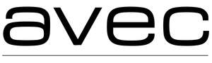

Trade Mark Journal No.2025/028 11 July 2025
UK00004219679 16 June 2025 (3,8,11,21,24,26,44)
Mark 1
AVEC
Mark 2

- Class 3
- Preparations and substances for use in the care and appearance of the hair, scalp, face, skin, nails and eyes; cosmetic and toiletry preparations; hair care products; non-medicated toilet preparations; soaps and cleaning preparations; shampoos, conditioners, moisturisers and rinses; aerosol and non-aerosol hair sprays; mousses, foams, gels, styling sprays and styling lotions; hair glaze and waxes; sculpting and volumising sprays and lotions; permanent and semi-permanent hair colouring preparations; hair colour; hair dye; hair tints; hair bleach; hair highlights; hair conditioner; hair decolourants; depilatory preparations; sun-screening and tanning preparations; perfumery; dentifrices; hand and body creams and lotions; bath preparations; body care preparations; pedicure and manicure preparations; beauty care preparations; essential oils; perfumery; artificial tanning preparations .
- Class 8
- Hand tools and hand operated implements; hand held tools and implements for use in the care and appearance of the hair, scalp, face, skin, nails and eyes; hairdressing scissors; hair setters and hair curlers; gas hair curlers; curling tongs; hand held hair stylers; rollers for hair; hair rolling apparatus and instruments; hair clippers; razors; electrical razors; razor blades; scissors; epilating devices; electric and non-electric apparatus for use in pedicure and manicure; parts and fittings for the aforesaid goods.
- Class 11
- Heating and drying apparatus and instruments for use in the care and appearance of the hair, scalp, face, skin, nails and eyes; hand-held and non-hand-held hair-dryers and electric hair-dryers; hot air brushes for hair; steam brushes for hair volumisers; parts and fittings for all the aforesaid goods.
- Class 21
- Household containers and utensils; combs and sponges; brushes; articles for cleaning purposes; articles and utensils and accessories, for use in the care and appearance of the hair, scalp, face, skin, nails and eyes; cosmetic applicators and brushes; parts and fitting for all the aforesaid goods.
- Class 24
- Textile goods; towels; bath towels and sheets; bath linen; textile goods for use in the care and appearance of the hair, scalp, face, skin, nails and eyes.
- Class 26
- Hair accessories, hair ornaments; hair bands; hair pins and hair grips; hair slides; bows and ribbons for the hair; hairnets; hair pieces; wigs; toupees; parts and fittings of the aforesaid goods.
- Class 44
- Provision of beauty salon services; hygienic and beauty care services; hairdressing services; cosmetic treatment; beauty therapy; beauty treatment; massages, manicures, pedicures, toning, electrolysis, body wrapping; provision of facial treatment, foot treatment and nail treatment; sun tanning salon services; consultancy services in relation to the foregoing.
The Avec Corporation Limited
Representative: Murgitroyd & Company